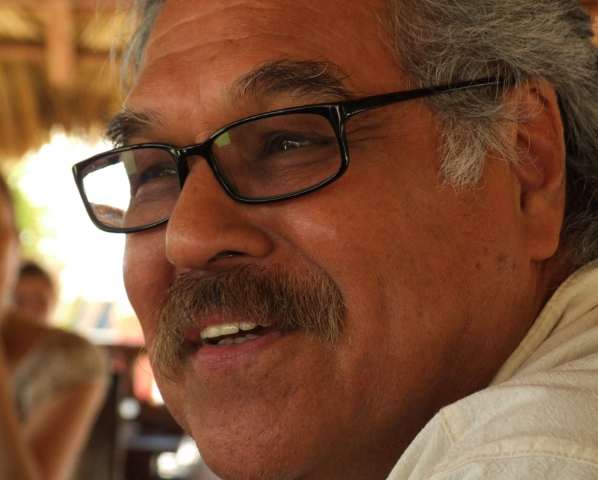
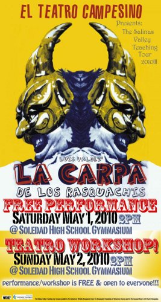
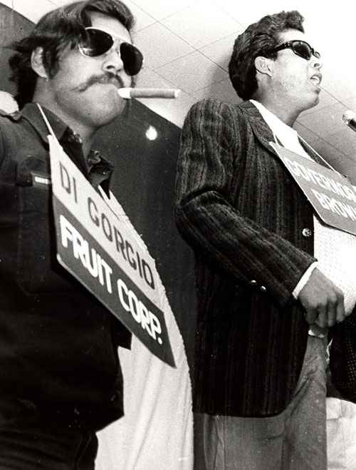
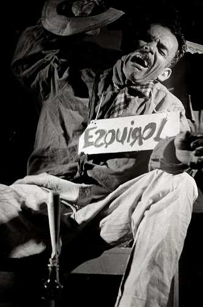
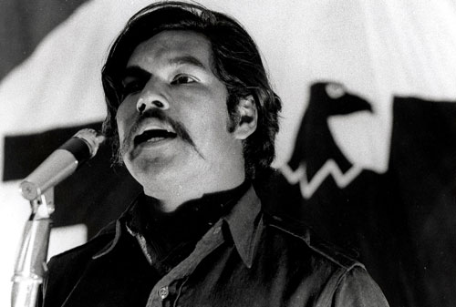
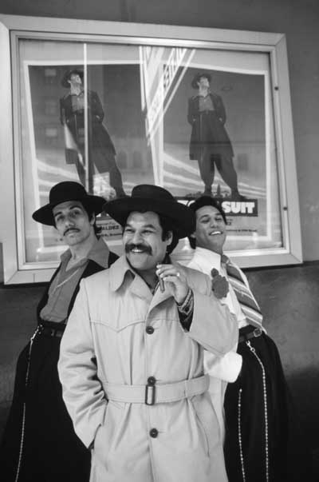
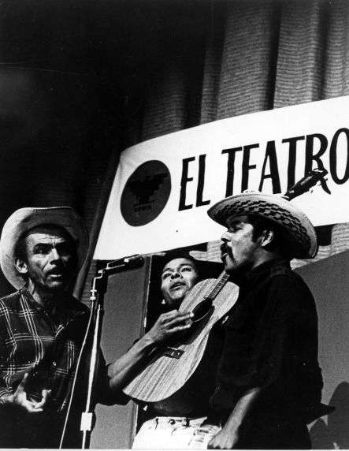
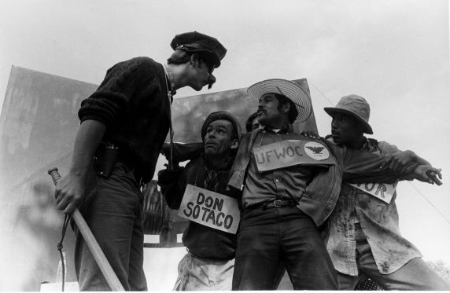
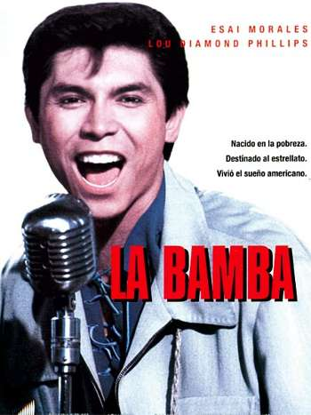
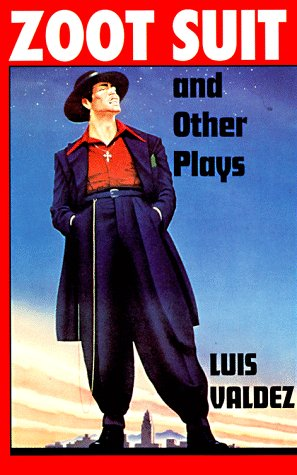

Luis Valdez
El Teatro Campesino
Publicada con la edición 20 del Periódico Medellín en Escena - año 2010
Por Cristóbal Peláez G.
Trascripción: Juan David Correa

“Mi estética está basada en el nahui ollin,
en el pensamiento Maya que dice:
tú eres mi otro yo; si te amo y te respeto a ti,
me amo y me respeto a mí,
y si te hago daño a ti, me hago daño a mí”
El encuentro fue en Cuba a mediados de mayo de 2010. Allí llegó con su mujer Guadalupe, que lo ha acompañado por cuatro décadas. El inventor del teatro campesino sigue siendo a voluntad un campeche mexicano con credencial de norteamericano. El elenco del Teatro Matacandelas estaba aquella tarde en ese costado del malecón habanero, en el restaurante El Conuco, más que admirado con la pareja chicana. Luis Valdez había llegado a la isla para recibir El Gallo de La Habana, galardón concedido a personalidades, grupos o eventos reconocidos por sus aportes a la historia teatral de América Latina. Los organizadores de Mayo Teatral no podían sospechar que el hombre iba a desatar esa cresta de entusiasmo. Para muchos era una leyenda. Evadiendo invitaciones, cámaras, entrevistas, llegó literalmente fugado a cumplir con nuestro encuentro. Luis Valdez es un hombre fundamentado en lo académico, en lo teórico y en lo práctico. Sus raíces indígenas y su cultura mexicana aún permanecen latentes, pese a toda una vida viviendo y escribiendo en Norteamérica, su nacionalidad accidental. Hemos procurado, en la traslación de la conversa, cuidar el tono chicano de su expresión, sus giros, sus curvas musicales, para tratar de que el lector tenga un mínimo acercamiento a su personalidad telúrica.
-¿Empezamos?
-Seguro, pues, como ustedes digan no más, a ver, compañeros, pregunten. Muy bien, órale.
La boca hambrienta de mi creatividad
Guadalupe: Luis, cuéntales esa historia de cuando eras niño. Es una bella historia.
Luis Valdez: Pues sí, yo soy de 1940 y en el 46 andábamos de campesinos inmigrantes y llegamos a un pueblo llamado Corcoran. Hay allí una gran prisión, pues las prisiones se han vuelto una importante industria en California, y a los que imprisionan realmente es a los jóvenes, a los latinos y a los negros afroamericanos. Muy pocos anglos, aunque hay unos famosos; Charles Manson, por ejemplo. La prisión se ha vuelto la renta del pueblo ese, pero cuando yo lo conocí era un centro agrícola muy grande, y estábamos en un campo laboral inmenso, piscando algodón; había mucha gente, era después de la Segunda Guerra. Yo pensaba que todo el mundo era campesino en ese tiempo, y había de todo: asiáticos, negros, anglos, de todo; era asunto de la guerra. Así es que con tantos piscadores se acabó muy pronto la temporada de algodón, no había en donde trabajar, y nosotros hospedados en carpas, viviendo ahí, y se comenzó a ir la gente, y nosotros no podíamos seguir el camino porque la camioneta de mi papá se había descompuesto y la tenía en bloques. Sin qué comer, pescábamos en un río cercano y comíamos tortillas, pescados y frijoles. Así existíamos.

Era comienzos de noviembre, empezó a entrar el frío y a llover, y nosotros todavía viviendo en ese campo. Había mucho lodo, y pues una mañana en el río ya mero me ahogaba. Tenía seis años, al pescar caí en el agua, y a mi mamá le dio mucho miedo y dijo: ¿Por qué no se van a la escuela? Aunque no vamos a estar mucho tiempo aquí, mejor que estén en la escuela. Así es que yo y mi hermano fuimos a la escuela. Mi mamá me empacaba el lunch en un saquito color café que había agarrado de la tienda, y en ese tiempo era cosa rara, un saquito especial, de mi tamaño, ¿verdad?, con los tacos (risas), y era mi posesión, la única cosa que tenía yo. Un día al llegar al ropero de la escuela a recoger mi saco no lo encontré, y la maestra me vio en pánico, buscando mi saco, y me dijo: ¿Qué buscas? Y le dije: ah, un saquito color café. Me dijo: pues yo lo tomé. ¡Pues démelo!, le dije, y me dijo: no puedo… ¿Qué? Y dijo: venga pa'cá. Me metió a un cuartito atrás, donde estaba todo roto mi saco, flotando en agua, y pensé que se había vuelto loca la maestra. No, dijo, mira esto, y levantó un pedacito del saco, le metió una pegadura blanca y lo puso sobre un molde. Fue el primer momento que noté un molde de plastilina y una cara de un animal. ¡Ay, un chango!, y comenzó a poner otro pedacito, y otro, y fue en ese momento donde descubrí uno de los secretos del universo: el papier maché. ¿Y para qué es esta máscara? Dijo: Pos es para un play, un drama, un acto teatral que vamos a poner, la navidad en la selva, y toda la escuela va a estar metida. Necesitamos dos actores de primer grado que desempeñen el papel de changos… Los ensayos van a ser la semana que entra. Entonces le perdoné, ¿me entienden?, y a la semana siguiente entré a los ensayos y me gané mi primer papel, el papel del chango, con todo y la máscara hecha de mi saco de taco de mi mamá, la maestra la pintó muy bonita; un traje mejor que mi propia ropa, un chaleco rojo, unos pantalones verdes, unos zapatos rojos, una cola, un sombrerito, y yo pos andaba en la gloria, mano. Nos iban a presentar, me iban a ver mis padres, qué bien. Era una escuela rasquachi, vieja, bien vieja, el escenario medio chico, pero para mí estaba en Hollywood. Montaron árboles falsos de papel, la banda comenzó a tocar, y yo excitado. Un viernes nos íbamos a presentar, el lunes antes llegué de la escuela y me dijo mi mamá: nos tenemos que ir. ¿Cómo que nos tenemos que ir? Sí, nos están echando del campo. Y yo: pero amá, la obra es el viernes. Yo sé, mijo, pero no podemos quedarnos. Y lloré, pos mi mamá lloró conmigo, ¿verdad?, pero no hubo modo, la siguiente mañana nos fuimos. Iba en la camioneta mirando el pueblito, dejando atrás la escuelita. Había mucha neblina y yo llorando. Sentí un hueco que se abrió en mi pecho, a los seis años, qué tragedia, pero realmente lo que me llevé fue el secreto del papier maché y las ganas de completarlo. Así pues, ese hueco se convirtió en la boca hambrienta de mi creatividad. Después de eso comencé a hacer máscaras con mi propio papier maché, comencé a jugar con mis amigos, no le hace cuál lugar fuera: afuera, bajo los árboles, una casa abandonada, una caballeriza, no le hace, yo comenzaba a montar teatro con mis amigos y mis primos. Tenía seis, siete años, y mis primos al final no aguantaban y se enfadaban: ¡No, ya no nos gusta el teatro! Pero anda que el juego... ¡Es que ya no sabemos qué decir!, me decían. Toma, di esto. Más allá no quisieron, entonces mejor hice títeres, esos sí tenían que hacer lo que yo quería. Y pues sí, comencé a presentar títeres, y una cosa se fue a la otra, y después, tenía unos trece años, un amigo me trajo un regalo: un muñeco, con boca movible de ventrílocuo, y me volví ventrílocuo. Era un monito anglo, muy curioso. Le puse una barbita y me quedó un gringito que entendía a los mexicanos, y a base de eso hice un tipo mexicano en madera balsa, así tenía dos, y así trabajaba mi identidad, lo anglo con lo mexicano, y yo me metía: no se peleen, muchachos, no se peleen. Y entonces comencé a actuar en los campos laborales, debajo de árboles donde íbamos a trabajar, y los campesinos ahí sentados, toda la familia, y me gustó mucho el hecho de que podía entretener a los trabajadores, hablar de las cosas, de nuestra vida, de lo que estaba pasando. Comenzó a crecer en mí el sentido de que tal vez se podía hacer teatro, ¿me entienden?, a lo mejor puedo combinar todo esto y hacer teatro. Nos íbamos a trabajar en los camiones en las mañanas, nos subíamos todos en los camiones grandes, a ir al campo, y comencé a estudiar esos camiones, me hacía mis elucubraciones: está bastante grande, esto serviría de foro, le quito las paredes, le meto... Así comenzó a crecer, en puro juego, pero realmente se convirtió en algo de adeveras, y se lo debo todo a aquel saquito de la máscara.
“Nunca supe el nombre de esa maestra. Hace dos o tres años di una conferencia para superintendentes escolares en California, y el superintendente de esa región me dijo que iba a hacer una búsqueda y me mandó por correo una copia fotostática de la lista de asistencia de la escuela en 1946, y allá abajo en la lista dice Luis Valdez. Estuve en esa escuela por treinta días, fui niño campesino, entré y salí con el viento. Cuántos miles y miles de niños han entrado y salido con el viento. A mí me tocó la bondad y la buena suerte de encontrar a esa maestra que me dio el secreto del papier maché, y la posibilidad de participar en un trabajo como actor. No sabía el nombre de la maestra, pero allí estaba, arriba en la hoja: Ruth Tremaine. Le agradezco, esté donde esté, que me lanzó.” Conferencia en México, Teatro Casa de la Paz, marzo de 2009

No nos moverán
No, pues nosotros comenzamos en el 65. El Teatro Campesino tiene sus orígenes aquel año, en la huelga de la uva en Delano, California. César Chávez fue quien organizó La Asociación Nacional de Campesinos en aquel entonces; lo hizo sin ningún centavo, regresó a los campos con su familia y comenzó a organizar el sindicato, sin apoyo, ni nada. Él, su señora y sus hijos hacían los panfletas y salían al campo a movilizar a los trabajadores. Los rancheros, hay que decirlo, no le tenían mucho miedo, era una cosa de burla: ¿qué va a hacer este? Porque César Chávez era un chaparro como yo, medio indio también en apariencia, era una cosa… pues mira… Sin embargo, su manera de organizar era muy concreta, muy directa. Había sido ya director de una organización estatal, pero dejó el trabajo, y hasta le ofrecieron seguir con La Alianza por la Paz, pero no aceptó nada, él se fue una vez más al campo a organizar, con la ayuda de varios otros; Dolores Huerta, por ejemplo, una madre luchadora, con varios hijos. Cinco mil trabajadores habían salido del campo demandando mejores sueldos, mejores condiciones de trabajo, que se quitaran los venenos de los pesticidas y otras cosas. Los patrones no cedieron en nada. Estalló la huelga, promovida principalmente por los trabajadores filipinos y su sindicato, pero finalmente el de los filipinos y el de los mexicanos se unieron en un solo sindicato. Fue la huelga más grande vista en treinta años en California en un área de mil millas. Partían las cuadrillas en caravanas de carros. Imagínense esos caminos tan rectos, tan bien hechos, y entre ellos los viñedos, las grandes vinatas, que son fábricas en el campo, la gran producción de uvas y vino en Delano. Nuestro trabajo era encontrar cuadrillas donde fuera para convencerles de abandonar los campos, que salieran de las viñedas y se juntaran con nosotros. Cinco mil trabajadores salieron, pero igualmente las empresas metieron otros quiebrahuelgas, y entonces el propósito se volvía entrar y sacar esos quiebrahuelgas, y cada vez que los sacábamos metían otros, una lucha constante de convencerles. No podíamos usar la violencia, todo era a fuerza de palabra. Desde la línea de guardia se usaban las bocinas de pilas, banderas, letreros... Y por ahí se fue entrando el teatro campesino. Nosotros nos subíamos arriba de los camiones para comenzar a actuar cosas muy pequeñas, con letreros, con máscaras, en un modo muy directo de convencer a los trabajadores. Algunos de esos trabajadores hasta se integraron al teatro; de los primeros actores que tuvimos, un tal Felipe Cantú, por ejemplo. Andaba de esquirol, andaba quiebrahuelgas, pero se unió con nosotros más bien porque le interesó el teatro; dijo: aquí está mi papá, esto lo quiero hacer yo.
Era el teatro una forma de informar y educar a los trabajadores sobre lo que estaba pasando, pues muchos de ellos no sabían. Los traían de México, los pasaban por la frontera y los metían 500 millas hacia el norte, hasta Delano, para trabajar por cualquier cosa en los viñedos. No se daban cuenta de nada, permanecían encerrados en los campos laborales, y para nosotros era muy peligroso entrar a esos campos con tantos guardias. Finalmente logramos legalmente entrar en las tardes para hablar con los trabajadores, y ahí también entró el teatro. Cierto límite de unos tres o cuatro actores podían entrar durante el medio día, al momento de la comida (disponían de media hora para comer). Entrábamos entre el polvo, veían un acto de cinco minutos, algo muy rápido y directo, y se reían, disfrutaban mucho.
Se sentía el potencial de violencia, la presencia constante de los guardias achichinques que trabajaban para los rancheros, siempre prestos a provocarnos con navajas, con palos. A veces se desataba la violencia. A mí me alcanzaron a golpear en unos casos, y me echaron a la cárcel también por estar haciendo teatro. En dos ocasiones me sacaron pistola y me la pusieron en la cara, y me dijeron: ¡Ahora actúa, cabrón! (risas).
El teatro era un circo
Para los campesinos nosotros éramos un circo, lo único que habían visto, no sabían qué era eso de teatro. ¡Ahí viene el circo y aquí vienen los payasos! Para nosotros era importante el aspecto de la sátira, que ellos tomaran conciencia de su condición, pero igualmente era muy importante la risa, que gozaran.
Eso fue en los comienzos de lo caliente de la lucha; dos años estuvimos en eso. Después nos fuimos aumentando con obritas de diez, quince minutos. Cada viernes había reunión donde se trataban los asuntos de la Unión, de los miembros, de las contribuciones que se estaban dando de comida, de ropa, de asistencia médica para los huelguistas. Y en esas juntas, al cierre, se hacía una presentación de teatro con un acto –alcanzamos a llamarles “Actos”–, de diez a quince minutos, y también con canciones, porque la canción se hizo muy importante hasta en la línea de guardia. Un modo de infundirle más coraje a la gente era entrar en el canto, que todos estuvieran cantando, así les enseñábamos canciones, y nosotros también las componíamos o las traducíamos del movimiento laboral del inglés al español, o del movimiento de derechos civiles al español, y se volvieron himnos. Todavía se utilizan, ya vamos en 45 años y todavía se cantan las mismas canciones.

Todo El Teatro Campesino cabía debajo de un catre
Cinco o seis actos consecutivos, y podíamos entonces organizar funciones en las ciudades para alzar fondos para la Unión; es otra cosa que comenzamos a hacer, especialmente después de una gran marcha entre Delano y la capital del estado de Sacramento: 360 millas a pie, 25 días, 25 paradas, 25 grandes juntas cada noche en diferentes pueblos. Todo se organizaba alrededor de un camión, que era el foro: se ponía en un parque y se iluminaba con lo que había, y luego los campesinos acudían a la junta general y oían la música, oían los cantos, y luego los discursos de los líderes de la Unión, hablando ahora de la condición del campesinado de esa área. Después venía la presentación de El Teatro Campesino, y ahí sí entonces nos dieron media hora, ya teníamos media hora, así que fue aumentando.
La importancia realmente en nuestro trabajo se comenzó a reconocer por su líder César Chávez, cuando nos dieron un presupuesto de cien dólares mensuales para comprar elementos necesarios, pintura y telas para hacer los letreros, y finalmente pues nos prestaron una camioneta para ir a los lugares de presentación, y poco a poco se fue creciendo la cosa. Al principio El Teatro Campesino consistía en una cajita, ahí estaba todo, lo podía empacar en una pequeña caja de madera donde se transporta la uva. Ahí tenía dos máscaras y unos cuantos letreros de cartón, y eso lo ponía debajo del catre donde dormía: ahí, debajo de un catre, estaba todo El Teatro Campesino. En noches se nos metía algún borracho. Una noche tuve que dar mi cama a uno que ya estaba vomitando: ah, cabrón, vete que te nos vas a vomitar sobre todo el teatro (risas).
Fue un desarrollo acelerado, se dio en dos años, muy rápido el crecimiento del teatro. Comenzamos de la nada y nos volvimos un instrumento de lucha muy importante. No había estabilidad, los actores entraban y salían del teatro, se volvían organizadores. Si se destacaban, si podían hablar, si tenían la facilidad de improvisar y de hablar en público, a César le interesaba mucho cogerlos y mandarlos al boicoteo, a la lucha; siempre nos estaba quitando los actores, ¿verdad? (risas). Yo le decía a César Chávez: no te puedes llevar este, lo necesito. A Nueva York, mano… era su respuesta. Algunos de mis actores se volvieron muy buenos organizadores, de nivel nacional. La otra noche vi uno de mis buenos actores en la televisión, ahora es un vicepresidente de la unión de los trabajadores domésticos de los restaurantes, empleados del servicio y de industria culinaria en Estados Unidos, y estaba hablando de la situación en Arizona. Ya está mucho más viejo, todo canudo, pero entonces tenía 18 años, la vez que yo lo vi entrar, y sentí que era pos muy inteligente y tenía modo de hablar y sí, sí, claro, se volvió un gran líder laboral. Ay, ¡salud! (Eleva al aire el inocente líquido de Tukola, la coca cola cubana).
Un interregno con Guadalupe
Yo lo conocí fue a través de mi mamá. Me dijo que fuera a la plaza donde estaban los campesinos con su teatro, y que allí había uno de ellos que hablaba muy bonito. Siempre digo que me enamoré de Luis por la política antes de enamorarme del hombre. Mis padres eran campesinos, también estaban en la lucha. Teatro nunca había visto en mi vida, la primera obra fue la de Luis, Las dos caras del patroncito, donde pude ver una reflexión acerca de mí misma; es una obra que todavía tenemos en repertorio, la hacen nuestros hijos.
Cuando vi ese circo ya quería entrar, pero estaba yendo al colegio y como soy tan práctica me dije: no, no puedo. A la siguiente noche ellos ya estaban en otro lugar. Pero seis meses después Luis comenzó a enseñar en una universidad y yo tomé su clase. Este año cumplimos 41 años juntos.
Hey, Lupita mi amor
Lupe tenía 24 cuando nos casamos, y para mí siempre tendrá 24 –parece triste pero no lo es– (risas). Pues muy bien, eso ayuda mucho, le enriquece a uno la vida. Es fundamental tener una conexión con tu pareja, hablando de los ideales, de la política, de la vida, ¿verdad? Además me gustó mucho su familia, eran campesinos, sencillos, buena gente, y uno puede ver mucho en la familia de su pareja. Mi suegro había estado en una huelga muy importante en las afueras de Los Ángeles en el 41, de las limoneras, y los rancheros destrozaron esa huelga y desparramaron a todos los huelguistas porque no encontraban trabajo en esa área. Por eso se mudaron al Valle Central, donde nació Lupe, y por eso también ya cuando estalló lo de Delano y César Chávez, mi suegro pos se identificaba mucho con la lucha, y por eso entonces sentía esa simpatía inmediata. Los padres apoyaban mucho el trabajo del Teatro Campesino. Uno de los corridos de mi suegro se convirtió en una de las mayores obras, La carpa de los rasquachis.
“Cuando entré a Hollywood algunos pensaron que me había vendido, pero regresé al teatro porque soy un hombre de teatro. Me da gusto decir que tuve un éxito taquillero y que una obra chicana pudiera ser taquillera. Zoot Suit estuvo once meses en el Teatro Acuario a lleno completo. La película fue de bajo presupuesto, y aunque no tuvo el éxito de taquilla esperado, sigue fresca. Luego La bamba tuvo un éxito mayor. Pero siempre me interesó volver a la trinchera. Después de La bamba regresé al teatro porque comprendí que Hollywood es un negocio de corporación. Para que uno se mantenga tiene que convertirse en comodidad, hacerse producto, marca comercial.” Conferencia en México, Teatro Casa de la Paz, marzo de 2009
La carpa de los rasquachis
Un rasquachi es el más pobre, el que no tiene nada, solo garras. Los rasquachis pueden convertirse en algo muy bueno, así como estos carros modelo 50 que vemos aquí en La Habana; esos son carros rasquachi: están pintaditos, en buenas condiciones, y corren todavía. Poco pelo pero bien peinado, ¿me entienden? (risas).
En un tiempo rasquachi era palabra mala; el pobre, el de abajo, era un rasquachero. Pero nosotros lo convertimos en algo bueno. Un rasquachi puede ser muy útil, es saber hacer las cosas con lo que tengas. Así es como ello se convirtió en un elemento estético de nuestro grupo: “el rasquachismo”. Una escoba puede convertirse en rifle, ya es mimo, mimética, un garaje se vuelve un teatro, depende de lo que tú quieras hacer. En nuestra obra el papá se llama Jesús Pelado Rasquachi, su esposa es María Rasquachi y sus hijos también se apellidan así. La obra tiene casi cuarenta años y sigue vigente.
Lupe: Ahorita mismo la estamos haciendo, y nuestros hijos van a los campos, están ahí con los campesinos, trabajando con ellos, dando talleres. Se representa en cualquier lugar, porque es música, es corridos, no es algo que necesite un foro, luces, gradas.
Luis: Sí, aquí mero en este espacio donde estamos se podría hacer.
Más allá de la huelga
Las pequeñas obras de diez, quince minutos, además de ser actos agitacionales de la huelga, trascendieron su temática y se volvieron en contra de la guerra en Vietnam. Por ahí salió El soldado raso. Sobre los pretenciosos de la comunidad hicimos Los vendidos, que es una tienda donde venden diferentes tipos, y una secretaria del gobierno viene buscando un tipo mexicano, y el vendedor le muestra diferentes modelos: aquí está el campesino, aquí está el revolucionario, aquí esta el pachuco, y no le satisface ninguno de ellos, hasta que saca el mexico-americano en traje con corbata: ah, pues este sí, muy burgués el tipo, ¿verdad?; es el que le gusta. Pero cada uno de estos personajes más bien satiriza una posición del campesinado, y se hace de diferentes maneras; también lo llevamos al video en Los Ángeles, se hizo por un programa de televisión, y ahí utilizamos toda la compañía y un gran foro del estudio.
Nunca hemos parado
Todas nuestras obras se siguen dando, nunca pararon, todavía hay necesidad de hacer “Actos”. Hay nuevos que tratan sobre la inmigración, el narcotráfico, la intervención de los medios de comunicación, la función de la radio, y esos también compuestos ahora por otra generación, tenemos jóvenes en nuestro grupo. Ahora el director de El Teatro Campesino es nuestro hijo Kinan; nuestro otro hijo, Lakin, está preparando una obra sobre Víctor Jara. Tenemos un teatro en San Juan Bautista de 150 butacas, es una bodega que volvimos en un teatrico. La iglesia que se ve al final de la película de Vértigo de Hitchcock es San Juan Bautista; a cuatro cuadras está nuestro teatro.
“Antes de venir a Cuba yo realmente tenía el compromiso de ir a la guerra en Vietnam. Mandé una carta donde les decía: no me niego, que me entrenen, pero no se equivoquen, no soy pacifista, si ustedes me llevan al servicio militar voy a dejar que me entrenen, pero no me pueden quitar el derecho de apuntar el rifle donde quiera (risas). Así es que... pos no me llevaron.” Conferencia en Casa de Las Américas, mayo de 2010

“Lo que me pasó a mis seis o siete años se convirtió en la boca hambrienta de mi creatividad. Así es que por los últimos 63 años yo le he echado poemas, historias, obras de teatro, guiones de cine. Todo lo que he hecho, todo lo he echado por ese hueco, que todavía está ahí. Ya no es tan grande, pero todavía está, porque sigue siendo la motivación detrás de mi creación.” Conferencia en México, Teatro Casa de la Paz, marzo de 2009
Dramaturgo
¿Cuántas obras he escrito? No sé el número… Acabamos de levantar en México Zoot Suit, y se ha hecho también otra obra larga, del año 2000, por una compañía independiente; se llama Venado momificado. Trata con una época muy triste de la historia de México, que toca con mi familia directamente. Ahí estoy, pues todos somos mestizos, pero una gran parte de mi familia fueron Yakis del desierto de Arizona y Sonora, y hace más de cien años mi gente cruzó de Sonora a Arizona. Mi abuelo era minero en el cobre, participó en una de las grandes huelgas de México, la de Canenea, que dio inicio a la revolución mexicana hace cien años, en 1905. Después del desastre de esa huelga mi abuelo se fue a trabajar con los ferrocarriles y se casó con mi nana en Nogales, y ahí nació mi papá. Después se metieron a Arizona, los Estados Unidos. Lo curioso es que en México no eran mexicanos, eran indios, eran Yakis, una tribu antigua de la cultura Yoreme. El Valle del Yaki es una zona muy fértil en el norte de México, con un gran río –allí casi todo es desierto–, y por miles de años hubo tribus, pueblos enteros, y entraron los españoles y les gustó mucho el terreno, y dijeron: pos aquí nos gusta… y vamos a botar a los indios ¡afuera! Y así fue como comenzó una guerra en 1528 que duró hasta 1937.
El espíritu guerrero del Yaqui
Hasta la fecha los Yakis todavía se mantienen con esa actitud. Yo creo que ese espíritu de resistencia sobrevivió en mi familia, y por eso hablar de los indígenas es hablar de América Latina, es hablar de una América continental, porque mi gente ha vivido en ese territorio toda la vida; es un área grandísima, como 300 millas de la frontera con Arizona. Los Yaquis no construyeron pirámides ni nada de eso, son muy individualistas, pero tan importantes como que están en el Popol Vuh, en los antiguos relatos de la historia. Yo escribí lo tocante a la época donde el gobierno de México lanzó una guerra genocida en contra de los Yakis. Allí se hicieron cosas que los nazis hicieron mas tarde a los judíos, metiendo gente en los vagones de los trenes, por ejemplo, y luego mandándolos a Yucatán a trabajar como esclavos en las fábricas de henequén (cabuya). Algunos hasta llegaron a Cuba, de ahí pasaron a Marruecos, se disgregaron por España y Alemania, y finalmente estuvieron entre los cuantos que no eran judíos y fueron asesinados de manera atroz en los campos de concentración. Es una trayectoria de sufrimiento muy larga.
Venado momificado
Así pues, Venado momificado, la obra, está basada en un caso histórico que define más bien el personaje central: una mujer que la llevan al hospital. Su familia piensa que sufre de cáncer porque tiene una bola en el estómago, y cuando la examinan descubren no un tumor sino un feto momificado allí, incubado por sesenta años. Esa es la semilla de la obra. Un venado momificado es el feto, y se representa en escena por el bailarín del venado, con la cabeza del venado; lleva mucho de la magia. Tengo obras de larga duración y las obras colectivas con los otros miembros de El Teatro Campesino; guiones de cine, los que se han hecho y los que no se han hecho; y yo y Lupe tenemos una obra muy interesante sobre Las dos Fridas.
El Teatro Campesino, razón de existencia
Estamos en una época de mucha tecnología, pero con todo seguimos dependiendo de la comida, y los que producen nuestra comida son los campesinos. América Latina es en lo fundamental un continente campesino. Estados Unidos consume todo el producto, si lo dejan, de la América Latina. ¿Y quiénes son los que siembran, cultivan, cosechan el café, el banano, los vegetales, lo que está dándose en Estados Unidos? El norteamericano no quiere trabajar en los campos, por eso allá importan otra gente para hacerlo. Trataron de hacerlo con los indios, pero los indios no quisieron, metieron negros de África como esclavos y se rebelaron, metieron filipinos, mexicanos… han ensayado con todos. Lo que sabemos es que muy pocos angloamericanos se quedan en el campo, saben que hay más oportunidades en la ciudad y emigran; piensan: que se joda el campo.
La buena dramaturgia
La base de todo es tener buena dramaturgia, por supuesto, y por eso yo creo que los principios profesionales han sido muy importantes. Trabajo mucho el estilo brechtiano, me gusta ese estilo de teatro, porque es enseñanza, es muy importante, pero trabajo otras formas. He trabajado mucho el mito por necesidad. La inspiración de los mitos viene de los irlandeses, de la lucha de liberación de los irlandeses; estudié mucho esa literatura y la de los ingleses, también los finlandeses. Me he apoyado en la literatura de los norteamericanos. No obstante, en Estados Unidos a cada paso me preguntan: ¿You speak english? (risas). Y eso que también a veces me miran y me preguntan: ¿sabe usted leer? (más risas).
Cine y video
Yo soy Joaquín está basada en un poema de Rodolfo “Gorky” González, líder de los chicanos en Denver, un poema muy épico. Me gustó mucho el poema y le pedí el permiso de narrarlo con El Teatro Campesino. Me dijo: seguro que sí… Así pues, lo montamos: una presentación con transparencias y música en vivo. Entonces un amigo fotógrafo la filmó en 16 mm, ¡en una cocina! Así resultamos con la primera película chicana. Se pasó aquí en el Festival de Cine de Cuba. Y luego filmamos Los Vendidos, La Carpa de los Rasquachis y algunos documentales. Mi primer largometraje para el cine fue Zoot Suit. Trabajé en el proyecto Gringo viejo como primer guionista y director; ahí estábamos Jane Fonda, Carlos Fuentes y yo. La película estaba basada en un relato de Ambrose Bierce. Hubo problemas y me fui. No la dirigí, pero me pagaron por no dirigir: eso es Hollywood. Después escribí y dirigí La bamba; todavía es la película chicana más taquillera de Hollywood. Zoot Suit es la más taquillera de teatro. Ya ven por qué me dicen “el padre del teatro chicano” (risas).

Zoot Suit
Para hacer Zoot Suit me dieron trece días y un millón de dolares. Nada de tiempo y casi nada de dinero, comparado con las condiciones que le dan a los otros. Se filmó en el Teatro Acuario de Hollywood, con un escenario giratorio. El escenario fue como un pastel, dividido por secciones, y filmábamos dándole vueltas. Parece que la cámara se está moviendo, pero no, es todo el pinche escenario el que gira y Eddie Olmos está parado no más. Son trucos. Creo mucho en la creatividad de la necesidad, la necesidad es la madre de la invención, y en ese sentido sentí que era necesario cumplir, sentí encima el peso de la comunidad, el peso del movimiento chicano, la responsabilidad, sabía que no podíamos fallar. Como director no podía tener miedo, tenía que dar el brinco. Siempre me refiero a mis primeras experiencias con El Teatro Campesino de andar en los campos confrontando a los rancheros, así es que se me hizo mucho más fácil confrontar a los productores de Hollywood.
La cultura Maya
He creado mi propia estética para el actor, el método Luis Valdez (risas). Lo llamo el teatro de la esfera, o pensamiento serpentino, o ser vibrante, todos son la misma cosa. Se refiere a un concepto de lo que es el ser humano, basado en conceptos indígenas. No tengo nada en contra de las ideas de Europa. Está bien, ahí fue mi primera enseñanza, con el teatro de Stanislavski; lo griego, también; puedo entender un poco del kabuki, de lo asiático, del teatro balinés. Pero sentía la necesidad de poder definirme en términos de mis antepasados, y si soy entonces indígena de Las Américas, ¿cuáles son las ideas? ¿cómo se definen? Entonces comencé un estudio muy largo hace cuarenta años para tratar de encontrar esas raíces, y las encontré en la cultura Maya. Hay un sistema de movimientos, una descripción de lo que es el ser humano, similar a la que usa todo el mundo. Cada raza, cada cultura, ha expresado semejantes ideas a su forma y a su manera, pero la forma Maya es muy específica y está bien descrita en diferentes modos, en la mitología, pero también en los órganos de su ciencia, y eso es lo malentendido de los Mayas; la ciencia se ha descartado llamándola superstición, como si fuera cosa del demonio.
La serpiente
Todavía existe este prejuicio de los sacerdotes españoles cuando llegaron y no entendieron por qué tanta serpiente. Por eso hablo del pensamiento serpentino: se debe entender que una serpiente es solo un símbolo natural de las ondas existentes en la naturaleza, sean ondas de luz, ondas de sonido, microondas, macroondas, son la misma cosa. Son cuatro formas y la onda es la forma más básica que se da en la energía vital. Una víbora como no tiene brazos y no tiene piernas es una actualización en la naturaleza de esa forma, y esa forma la traemos nosotros. Nuestro espinazo dorsal es una serpiente, es la corriente de toda la energía que nos hace vivir, y del coxis a la base del cerebro hay una conexión tremenda. Cuando el danzante se mueve, cuando el atleta se mueve, cuando el actor se mueve, está activando todas esas fuerzas serpentinas, y son naturales, son las fuerzas de las ondas electromagnéticas del cuerpo. Por eso entonces nuestro trabajo lo comenzamos con el espinazo dorsal, y tenemos lo que se llama la letanía de la pelota: una esfera, puede ser una bola de fútbol. Cuando te sientas en la bola sientes presión en el coxis, la base de tu espinazo dorsal; sientes inmediatamente, físicamente, la energía. Esto tiene que estar vivo en todos los actores, y hay muchos actores que no activan el espinazo.
La emoción
Emoción proviene de moción: primeramente tienes que tener moción para tener emoción. Mucha gente en el teatro europeo busca la emoción a base de memorias, de referencias de algo que sufrí en un tiempo, entonces voy a recordar el sufrimiento que tuve; es el método de asociar las cosas. En este método no se hace eso, porque en el otro te haces daño. Este método se mete en la moción, especialmente la moción de tu corazón, así que si tú te sientas en la bola puedes sentir tu corazón. La mayoría de la gente no puede hacerlo a menos de que haga mucho ejercicio, o se excite de alguna manera, y comienzan a oír el latido del corazón. Pero si tú te concentras, dentro de una semana o dos comienzas a sentir el corazón, y con eso entonces entras en la moción principal de tu cuerpo, que es el latido de tu corazón. Ahora, los Aztecas tenían una palabra para el movimiento, que era ollin. Nawi ollin es cuatro movimientos, así la esencia del corazón es movimiento, y entonces, si tú llegas al punto donde puedes controlar tu corazón, puedes controlar tu emoción, y puedes entonces representar todas las emociones. Es una vibración que se da en tu cuerpo muy naturalmente, pero tú tienes finalmente que conectarte con tu propio corazón, tener corazón. Hay un poema indígena en náhuatl, ¿se los recito? Lo voy a hacer también en castellano y en inglés para que disfruten las diferencias sonoras: ¿Tle in mach tiquilnamiquia? / ¿Can mach in nemia′n moyollo? / Ic timoyol cecenmana / Ahuicpa tic huica: timoyolpopoloa. / ¿In tlalticpac can mach ti itlatiuh? En español: ¿Qué era lo que acaso tu mente hallaba? / ¿Dónde estaba tu corazón? / Por esto das tu corazón a cada cosa; / sin rumbo lo llevas; vas destruyendo tu corazón. / Sobre la tierra, ¿acaso puedes ir en pos de algo? (También lo recita en muy buen inglés. Aplausos).
Ahora bien, mente en inglés es mind, men en maya yucateco es creer, crear, hacer, y eso es uno de los puntos mas importantes de la estética: tienes que creer, tienes que tener creencias, sino crees en nada no vas a crear nada, y es el pie también de otra palabra que es para el trabajo: menya. Nosotros hablamos mucho de nuestra menya, y es men: creer, crear y hacer con la palabra. Es amor y dolor. Si tú sientes amor vas a sentir dolor, si tú sientes dolor es porque sientes amor; ahora, creer, crear, hacer con amor y dolor, es la definición del trabajo según los Mayas. En ese sentido todos somos trabajadores, ¿me entienden?, y no esclavos, ni esclavos de sueldo ni nada, sino creadores; ese es el destino del ser humano, ser creadores, eso lo dice la palabra men.
Los cuatro movimientos se dan en moción, emoción, noción, vibración, y la esencia del espíritu en la cuarta columna es vibración: saber cuál es la vibración. Y cuando un actor está en escena y está actuando como debe de actuar, está vibrando, hay que vibrar. Sin el sol no somos nada, sus ondas nos llegan constantemente, fingimos no percibirlas, hay ventarrones que se dan en el sol, y esto nos afecta y hay que buscar el equilibrio. Nosotros seguimos investigando en nuestros ejercicios, pero es una jornada ya no solo de una vida sino de muchas vidas. Hay que sembrar estas ideas para que otros puedan cosecharlas. En Colombia hay profundas raíces de lo precolombino, estas son ideas para el futuro, no del pasado, tienen mucho que ver con el tiempo tecnológico al cual estamos entrando.
Todo es música y en la base están las matemáticas
Fíjense no más, yo comencé con las matemáticas y la física. Me gané de muy joven mi beca a la universidad con base a mis estudios científicos, quería ser matemático, pero realmente había mucha otra cosa que pelear, ¿verdad? Sentí que el racismo era tan rampante en los Estados Unidos que era más importante trabajar en el teatro, convertirme en activista político, aunque siempre me han gustado los números. Hay una cierta seguridad en los números, pero no lo veo como cosa aparte, para mí es una continuidad, hay que poder asociar las cosas a través de las varias disciplinas. Así pues, me interesa todo, soy director, me interesa todo, ¿verdad? Para el químico no hay veneno, para el botánico no hay yerba mala; soy director, me gusta todo. En ese sentido, entonces, pues hay que hacer las conexiones. Me gusta la forma de los árboles, cómo crecen los árboles. El árbol ceiba crecerá aquí, ese mismo árbol crecerá en México, árbol de la vida. Lo vimos ayer, la ceiba que está sembrada allí, donde nació La Habana, lo fuimos a abrazar, Lupe y yo, hicimos una pequeña oración al pie del árbol. Me gusta mucho el origen de las palabras, saber de dónde vinieron, de qué forma se dieron; ese también es el juego que se da en un dramaturgo, hay que entender el lenguaje, las palabras.

La vida
He tenido la experiencia y la oportunidad que me ha dado la vida de conocer otros teatros: el teatro Kabuki, el No en Japón; la expresión que se da por allá en Filipinas, la misma cosa. Me gusta mucho lo humilde de las Filipinas, si uno es latino se siente mucho en casa en las Filipinas. Conocí a Enrique Buenaventura y el Teatro Experimental de Cali, a La Candelaria. A Enrique Vargas lo conocí en el 68, él tenía el Teatro Tripa en New York. Después se convirtieron en los reveladores del tercer mundo. La última vez que supe de él fue cuando me escribió que había visto Zoot Suit a orillas del río Orinoco, en un teatro del Amazonas, y que había indígenas viendo la película; traté de imaginarlo. Si lo ven me lo saludan. América es muy grande, la gente también me busca, piensan que me perdí, pero no, sigo en San Juan Bautista, cerca de San Francisco. Allí está mi casa, que es la casa de todos ustedes.
Fragmentos
Conferencia en México, Teatro Casa de la Paz, marzo de 2009
“Quiero decirles que los Estados Unidos están preñados por mexicanos y no lo saben, están esperando muchos bebés, que tal vez se puedan definir como chicanos. Pero el proceso de ser chicano para mí ha sido una experiencia de toda la vida, y como dramaturgo he tratado de representar esta evolución, y además también el futuro. Me gusta ser optimista pero tengo que respetar las realidades de nuestro tiempo –como digo de vez en cuando: soy optimista pero no pendejo–. Por eso como dramaturgo he tratado los problemas sociales y los puntos históricos de nuestra irrupción que merecen ser tratados, para poder entender el momento en que llegamos a donde estamos ahora.”

“El Teatro Campesino trabaja en un almacén muy viejo en California, en un pueblecito muy pequeño, San Juan Bautista, de mil ochocientas almas, rodeadas de urbanidad: San José, San Francisco, Monterrey, Salinas; es un oasis en medio del campo. Y estamos ahí por razones muy importantes: porque ahí están los campesinos, y porque ese lugar era antiguamente la capital del estado de California, cuando era México, y muy poca gente lo sabe. Sería más fácil estar en Los Ángeles con ayuda de la ciudad. Me ofrecieron un teatro en Los Ángeles y otro en San José. San Francisco me ha dado premios como hijo –hijo del diablo, quién sabe–, pero no me voy para allá. Estoy ahí con mi compañera, con nuestros hijos y con esa nueva generación en la trinchera, porque seguimos trabajando con los campesinos que viven en los campos laborales, en la plena lucha. México es aquí y está allá, a ambos lados de la frontera. Y estamos en el inicio de una nueva etapa para chicanos y mexicanos.”
“No había teatro cuando salí de la universidad con mi bachillerato en inglés y con algunos estudios de dramaturgia. Me fui a San Francisco a estudiar teatro chicano con el San Francisco Mime Trouppe, a presentarme en los parques. Mientras tanto mi abuelita, mi nana, me mandaba copias de un periódico, El Malcriado, que estaba publicando la Asociación Nacional de Campesinos guiada por César Chávez. Me di cuenta de que tal vez yo podía conformar mi anhelo de hacer un teatro que fuera a los campos laborales. Pensaba: cómo lo haré, cómo lo haré, y estalló la huelga. Yo tenía mi compromiso con la Mime Trouppe hasta octubre, y se acabó. Esperaba juntarme con lo que estaba pasando en Delano pero no encontraba el modo de comunicarme con César Chávez. Chávez se vino a San Francisco a alzar fondos, y sobre todo comida para los huelguistas, y me fui con él. Había mucha gente, cientos y miles, y no sabía cómo acercarme al líder, lo veía desde atrás y lo perseguí todo el día. Finalmente, al final del día, lo seguí a través del puente que conecta San Francisco con Oakland, y terminamos en una iglesia católica que se llama Saint Elizabeth, en Fruitvale, el distrito latino en Oakland. Allí, en el subterráneo de una iglesia, a fines de esa noche, después que había acabado todo, tuve mi chance de hablar con César. Le dije: Yo soy actor, yo soy de Delano, y quisiera adaptar un teatro para obreros y campesinos, de los campesinos y por los campesinos. Él se quedó muy quieto, estaba cansado pero me escuchó, se sonrió un poquito y me dijo: No hay dinero para hacer teatro en Delano, no hay actores en Delano, no hay foro, no hay teatro, no hay dónde ensayar, nos pasamos de guardia día y noche. ¿Todavía quieres hacerlo? ¡Cómo no, César, claro que sí! Qué oportunidad más chingona.”
“César Chávez se convirtió en el apóstol de la no violencia del movimiento chicano. Cambió al mundo, sin un centavo. Cuando no tenía qué comer, hacía ayunos. Convirtió lo que era negativo en positivo. De él aprendí cómo hacer algo de la nada. El Teatro Campesino nació de la nada.”
Conferencia en Casa de Las Américas, mayo de 2010
“Es cierto que hace 46 años estuve aquí en Cuba, en un punto de partida en mi vida. Tenía 24 años entonces, hacía poco realmente que había dejado los campos como trabajador campesino para ir a la universidad. Así es que realmente no conocía el mundo, conocía solamente la historia de mi familia, el trabajo duro del campo, que lo había conocido toda mi vida porque anduve en los campos con mis padres antes de que pudiera andar, andaba en los brazos de mi madre. Supe lo que era la explotación directamente, pero el poder de estar aquí en Cuba me abrió los ojos: que no era un solo individuo, una sola víctima de tantos, sino que era parte de una gran comunidad continental; que no era solamente una parte de una minoría despreciada en los Estados Unidos, sino que era una parte de una gran familia latina netamente americana.”
“Aquí en Cuba me sentí libre... por primera vez. Decidí entonces luchar por mi humanidad y por la humanidad de mis hermanos latinos. Tuvimos una junta con el compañero Che Guevara que duró cuatro horas. Él nos hablaba muchas cosas, muchos de los jóvenes entonces decían: ¿Cómo podemos darnos de voluntarios en esta lucha en Latinoamérica? Y el Che nos dio un consejo muy directo, nos dijo: ustedes son de los Estados Unidos, el destino de ustedes es trabajar dentro de los Estados Unidos, de cambiar la sociedad desde adentro… Y yo lo tuve en cuenta, tomé ese mensaje en mi corazón, y pensé: tiene razón el Che, nuestra responsabilidad es de cambiar los Estados Unidos desde adentro.”
“Yo organicé El Teatro Campesino el año después de haber regresado de Cuba. Era un joven ardiente, lleno de aspiraciones, de ideales, y cumplí entonces con el sueño que soñé aquí en Cuba… Aquí, una noche, por una calle, no sé exactamente en cuál, estábamos esperando salir del país y no cogíamos avión todavía, y alguien me dijo: hay una presentación de teatro en uno de estos barrios, ¿quieres ir? Y pues sí, y otros compañeros fueron conmigo. Nos fuimos por una de estas calles aquí en el centro de La Habana, y estaba una maestra muy joven con sus niños y ellos estaban presentando unas obras pequeñas, satíricas, de la situación de escasez en La Habana, y los niños pues realmente haciendo parodia de la situación, riéndose, pero a la vez animando a la gente, ¿verdad? Y a mí ese ejemplo me entró al corazón y dije: si esta maestra con estos niños puede hacer esta forma de teatro, yo también lo puedo hacer con mis campesinos.”

“El cero es el vacío, pero del vacío, de la nada, sale todo, así es que a mí me atraen mucho los lugares donde no hay nada, donde no hay todavía los recursos culturales que hay en otras partes. Me gusta mucho ese vacío porque ahí es donde encuentro yo más actividad que en ningún otro lugar. Me encanta ver las caras de un público que nunca ha visto teatro, me encanta ver los niños que nunca han visto teatro, que lo descubren por primera vez, porque es algo ya espiritual completamente, que llega el pueblo y ve algo y se asoma, se queda completamente azorado de ver algo que nunca ha visto. Eso es una lección que tenemos que aprender de nuevo todos los artistas: dedicarnos a buscar esos espacios donde pueden sentir ese instinto primero y natural que inspira a todos los actores.”
“América es un continente, América es un proceso de evolución para todos nosotros, que si no hay justicia para todos, si no hay trabajo para todos, si no hay comida para todos, entonces no hay América. América es un sueño de igualdad para todos, y hay que luchar por eso. En Estados Unidos se lucha de diferentes modos porque estamos adentro de la panza. ¡Es un país muy violento! Está muy preparado para aniquilar cualquier fuerza que se oponga, así es que hay que ser inteligentes y luchar de cierta manera. El proceso electoral, las huelgas, la educación, esas son nuestras armas. Las artes, finalmente, se convierten en una herramienta y un arma para poder luchar por la justicia. Por eso entonces estamos todavía en pie de lucha con El Teatro Campesino.”

Ocho semanas antes del estreno de Zoot Suit se vendieron todos los boletos. Y al dar inicio las funciones las críticas fueron muy elogiosas, de modo que este impulso hizo que ocho semanas después fuera trasladado el montaje al Teatro Acuario en Hollywood. Construido en los años treinta, este edificio viejo y acabado fue remodelado. Le pusieron nueva tapicería a las butacas, los camerinos fueron pintados de nuevo y se convirtió en el teatro de Zoot Suit. Un pachuco gigante ubicado en el exterior del teatro daba la bienvenida al público, que llegó al millón de espectadores, entre ellos gente que nunca había ido al teatro. Como dice Luis Valdez: mucha raza.
“Después de un año de temporada, con lleno todas las noches, ocho presentaciones a la semana, con matiné sábados y domingos, a los empresarios les fue tan bien que compraron el teatro con una capacidad para mil doscientas butacas”.
Entrevista tomada de la edición No. 20 del periódico de Medellín en Escena